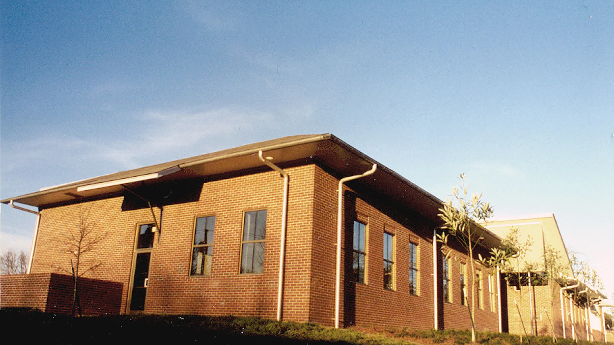
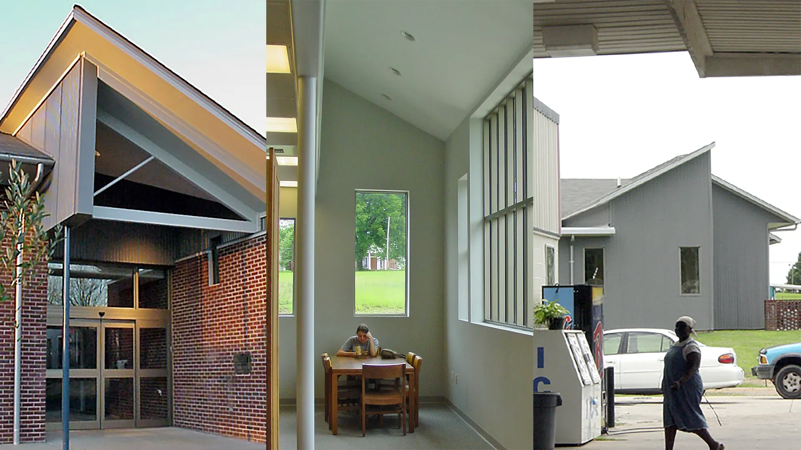
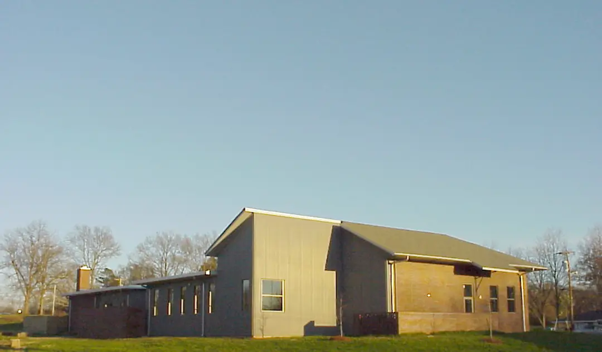
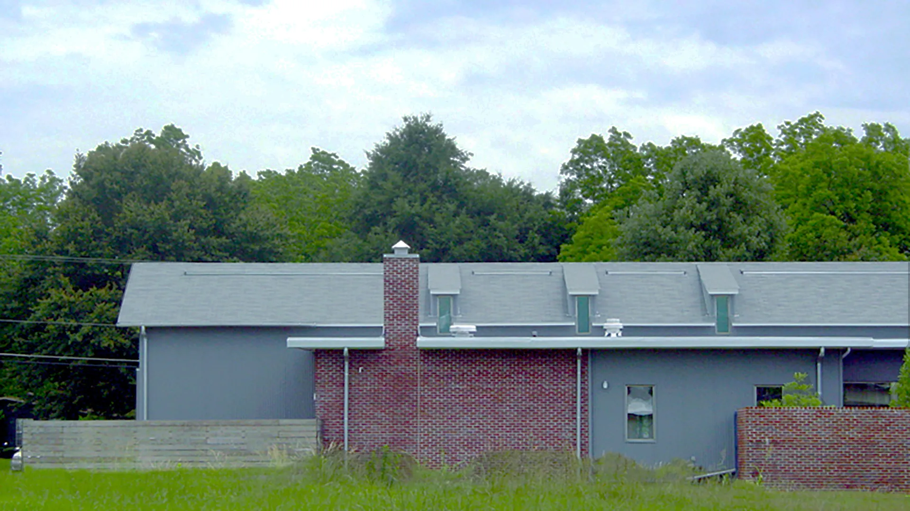

Flora Public Library
Flora, Mississippi
The design of this functional and economical library structure very subtly reflects some of the architectural forms and materials already inherent to the town. The building includes a Children’s Reading Room, a Large Meeting Room, and a Reading Garden.
Completed 2002



